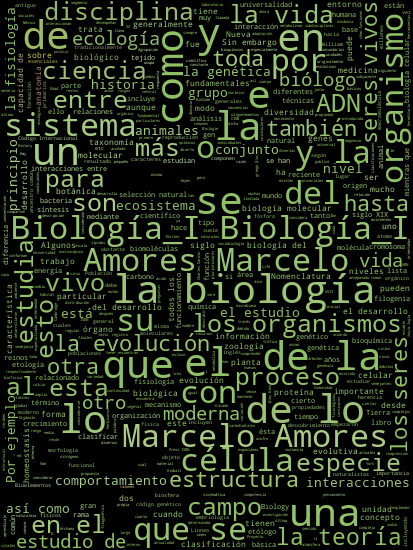

RUBICK
Tutoriales
Tutoriales de Cubos de Rubik

Este libro está diseñado para ayudarte a explorar y dominar el fascinante mundo de los cubos de Rubik y otros rompecabezas relacionados. Desde el clásico 2x2x2 hasta el desafiante Megaminx, cada sección te guiará paso a paso a través de los métodos y algoritmos necesarios para resolverlos.
¿Qué encontrarás en este libro?
1. Cubo 2x2x2
Un excelente punto de partida para principiantes. Este cubo, también conocido como Pocket Cube, es más pequeño y fácil de resolver que sus contrapartes más grandes, pero no deja de ser un desafío divertido. Aprenderás los pasos básicos y algoritmos esenciales para resolverlo en cuestión de minutos.
2. Cubo 3x3x3 (Principiante y Avanzado)
El cubo de Rubik estándar y el más icónico de todos. Aquí encontrarás dos enfoques: - Principiante: Ideal para quienes están empezando, con pasos simplificados que te llevarán a resolverlo paso a paso. - Avanzado: Para aquellos que quieren mejorar su velocidad, esta sección incluye métodos avanzados como CFOP, F2L, OLL y PLL.
3. Cubo 4x4x4 y 5x5x5
Conocidos como Rubik’s Revenge y Professor’s Cube respectivamente, estos cubos ofrecen nuevos desafíos, como el manejo de paridades y centros. En esta sección, aprenderás estrategias específicas para abordar estos problemas y completar la solución.
4. Pyraminx
Un rompecabezas en forma de tetraedro que se resuelve de manera distinta a los cubos tradicionales. Su mecánica única lo hace un reto interesante, pero relativamente fácil de resolver con los algoritmos adecuados.
5. Mirror Cube
Aunque tiene la misma mecánica que un cubo 3x3x3, el Mirror Cube basa su complejidad en la forma y no en los colores. Resolverlo requiere ajustar tu percepción espacial y prestar atención a las dimensiones de las piezas.
6. Megaminx
Este dodecaedro de 12 caras es uno de los rompecabezas más complejos. Sin embargo, con los métodos adecuados, puedes aprender a resolverlo siguiendo un enfoque similar al del 3x3x3, pero con algunos algoritmos adicionales.
7. Skewb
El Skewb es un cubo que se gira en sus vértices, lo que lo hace diferente de los demás rompecabezas en esta lista. En esta sección, aprenderás a dominar sus giros y resolverlo con algoritmos simples.
¿Por qué resolver cubos de Rubik?
Resolver cubos de Rubik no solo es una actividad divertida, sino también una excelente manera de mejorar tus habilidades cognitivas, como la memoria, la concentración y la resolución de problemas. Además, es un pasatiempo que fomenta la paciencia y la perseverancia.
Cómo usar este libro
Cada capítulo está diseñado para guiarte a través de la resolución de un tipo específico de cubo. Encontrarás: - Descripción del cubo: Características y mecánica. - Pasos básicos: Una guía paso a paso. - Algoritmos esenciales: Fórmulas que necesitas memorizar para resolver cada etapa del cubo.
¡Prepárate para embarcarte en este emocionante viaje y convertirte en un maestro del cubo de Rubik!